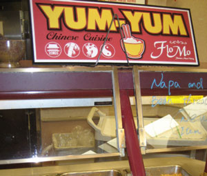

Dining: Fresh or Foul?
While Stanford prides itself on its technological innovation and advancement, its online dining menus, which it just unveiled last quarter, still fall short of those at many top colleges.
Stanford’s menus include only selected items and limited nutritional information. Princeton’s menus, on the other hand, indicate whether items contain pork, nuts or any animal-derived products. Yale’s menus even provide ingredients in descending order and specify whether items include possible allergens. While grilled items were added this quarter, the Stanford menu still leaves off most breakfast items, pasta bar dishes and soft-serve. The online system also does not include standardized menus or nutritional information for Olives Café, Late Nite or Wilbur Sweet Shop.
On Illegal Students and Illegal Immigrants
“IMPOSTER CAUGHT,” rang the Stanford Daily headlines. When it was discovered that a young woman, Azia Kim, had managed to falsely pass herself off as a Stanford freshman for eight months, the Stanford community’s reaction was furious. “We consider these allegations, if confirmed, to be a serious breach of security within the residence halls,” declared Greg Boardman, Stanford’s Vice Provost for Student Affairs. Student Amy Zhou, Azia’s roommate, also expressed worry: “To think that someone I trusted to be a Stanford student with a key was climbing in and out of windows and that I was in the same room all this time really freaked me out.”
State of the Race: The Republican Presidential Candidates
The 2008 election is a year and a half away, but the money and the media attention have been pouring in earlier than ever before. While the Democratic primary has essentially become a Clinton-Obama-Edwards race, two tiers of Republican candidates are still vying for the nomination and several possible contenders remain undeclared. Much can and will happen during this still-early stage, but the Republican picture is slowly coming into focus. Thus far, Rudy Giuliani (R-NY), John McCain (R-AZ), and Mitt Romney (R-MA) have emerged as the heavyweights of the GOP field.
China expert and Former Presidential Advisor talks East Asian, American politics
A small while ago, I had the privilege to talk with Bruce Herschensohn, currently a professor at Pepperdine who has advised both Presidents Nixon and Reagan on issues concerning Taiwan and China, and put up a great fight against Barbara Boxer when she first ran for the Senate in 1992. Recently, Mr. Herschensohn has written a book on the subject of his expertise entitled Taiwan: The Threatened Democracy ($25.95, World Ahead). Our delightful conversation covered several topics pertinent to East Asia, and the conservative movement today.
La Présidentielle: The Aftermath
Nicolas Sarkozy, leader of the right-centrist party, was sworn in as the 23rd President of the French Republic on May 16, 2007, after defeating the Socialist candidate, Ségoléne Royal. The new President, often called ‘Sarko,’ is a second-generation Hungarian immigrant of Jewish descent and a professing Catholic. With a background in corporate law and a resume that includes two terms as Minister of the Interior, Sarkozy now succeeds Jacques Chirac as President. On May 17, Stanford’s Forum on Contemporary Europe hosted a roundtable discussion to evaluate how Sarkozy won and what his election will mean for both France and the global community.
Arguing For and Against Genetic Engineering
Harvard philosopher Michael Sandel recently spoke at Stanford on the subject of his new book, The Case against Perfection: Ethics in the Age of Genetic Engineering. He focused on the “ethical problems of using biomedical technologies to determine and choose from the genetic material of human embryos,” an issue that has inspired much debate.
Wake Me Up in September When the Football Season Starts
With the new-found optimism that surrounds Stanford basketball, some students have started a Facebook group called “I Want to Co-Term Just for Stanford Basketball.” Someone who cares as much about Stanford football might actually need to get a PhD, because the football team looks like it is going to need THAT much time in order to make die-hard sports fans proud.
|

Strategy and Legitimacy: Exclusive Interview with Wesley Clark
Gen. Wesley K. Clark (Ret.) spoke about post-Cold War American policy on May 24 to a full crowd in the Hewlett Teaching Center. “Stanford is so wonderful, the students are so eager to participate and are so forthcoming,” he began. “I’m going to give you some ammunition tonight. I want you to be forthcoming, I want you to participate.” Clark was the final public figure the ASSU Speakers Bureau brought to campus this year. Stanford in Government co-sponsored the event.
OSA: The Path to Reform
The Office of Student Activities, the administration’s agency for regulating parties, student groups and their events, suffered a drastic decrease in legitimacy and student approval this year, as it was marred by a series of unpopular decisions. The OSA has remarkable control over student life at Stanford. All sizable parties and large-scale events must be approved, and all new student groups must undergo an often-rigorous review process. With great power comes great responsibility, as the adage goes, and the OSA hasn’t been perfect in this regard.
Editor’s Note: A Political Union
Over the course of the last two quarters, I have had the opportunity, and the burden, of experiencing Stanford’s student life from the perspective of both a journalist and a politician. Though I had the same goals in doing both, I have realized there is a fundamental disagreement between the two on the importance of truth, a split as present at Stanford as in society at large. Yet despite the universality of this truism, I believe we can find our own unique solution to the problem.
A Return to Isolationism
Leading Republicans and Democrats generally agree that America should have an interventionist foreign policy, although they differ on the details. The post-Iraq mood of the American people, however, hints at a future return to isolationism.
The Sun Sets on Tony Blair
British Prime Minister Tony Blair, winner of three consecutive elections and in power for a decade, has announced that he will submit his resignation to the Queen on June 27th. This leaves him with about a month in power, enough time to embark on a whirlwind, worldwide international farewell tour, the first stop of which was to congratulate newly elected French President, Nicholas Sarkozy.
Does Braille For the ‘Gender-Blind’ Have Gendered Pro-nouns?
Back in the idyllic days of my youth—Fall Quarter—I was skipping about my merry Freshman way when my curious eye landed upon a striking editorial. It revealed to me that those who run Student Housing were sexists of the highest degree! They’ve secretly, maliciously fixed random housing assignments, such that every roomer’s roommate is of the same sex, boys with boys, girls with girls! Segregation! Sexism! Maoist China, all over again!
Smoke Signals: Year in Review
The staff and writers of the Review have much to be proud of. They have made this one of the finest recent years of the Review. Next year promises to bring deeper reporting, more insightful writing, and more issues of The Stanford Review!
Final Agreement Reached in Khmer Rouge Trial Negotiations
Although it has been nearly thirty years since the Cambodian Khmer Rouge was ousted from power, its leaders have yet to be tried for the human rights atrocities of their Communist regime. One of the most lethal regimes of the 20th century, the Khmer Rouge was responsible for the deaths of about twenty percent of its population. The United Nations and Cambodia have recently agreed to legal conditions that will allow for such human rights trials to take place. While the development of a specially suited court is significant progress in the pursuit of international justice, ongoing bureaucratic and political debacles prevent the selection of a specific date for the trials.
|